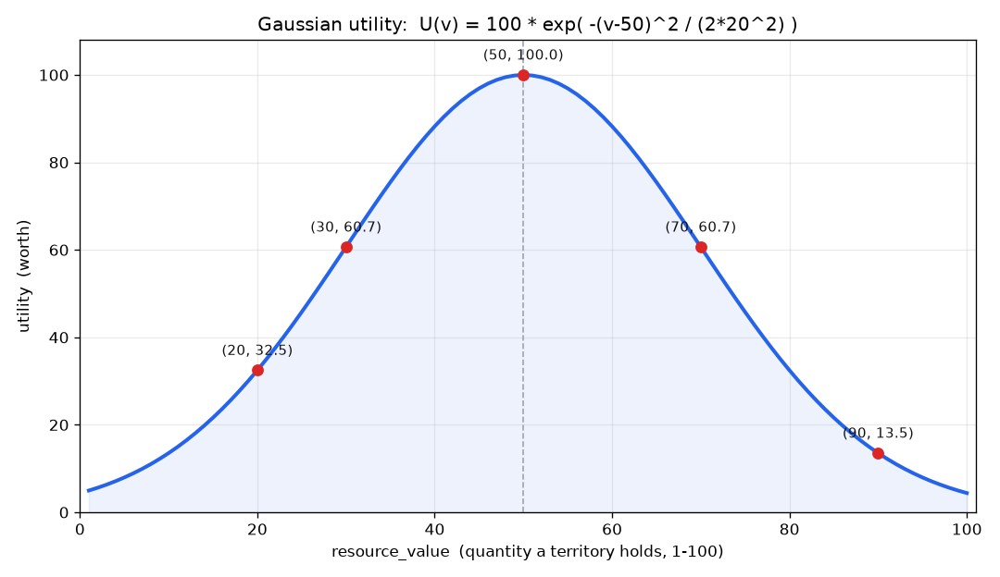
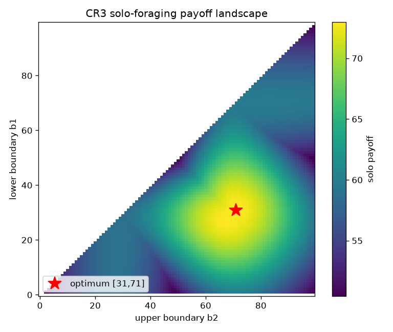
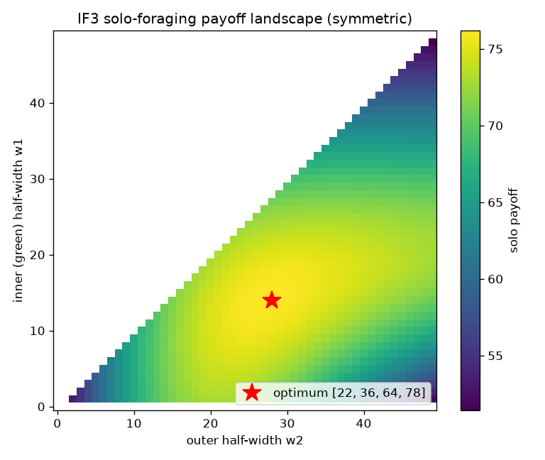
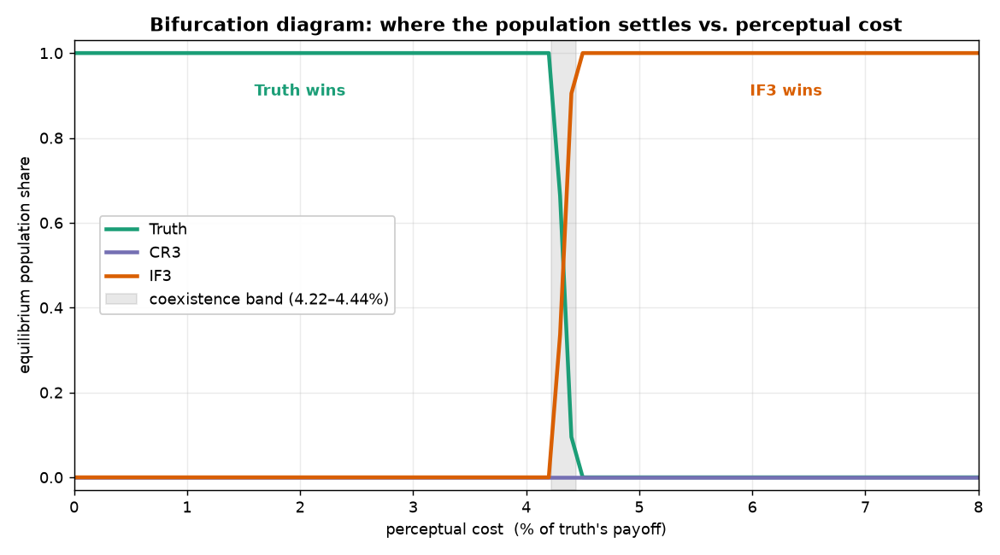
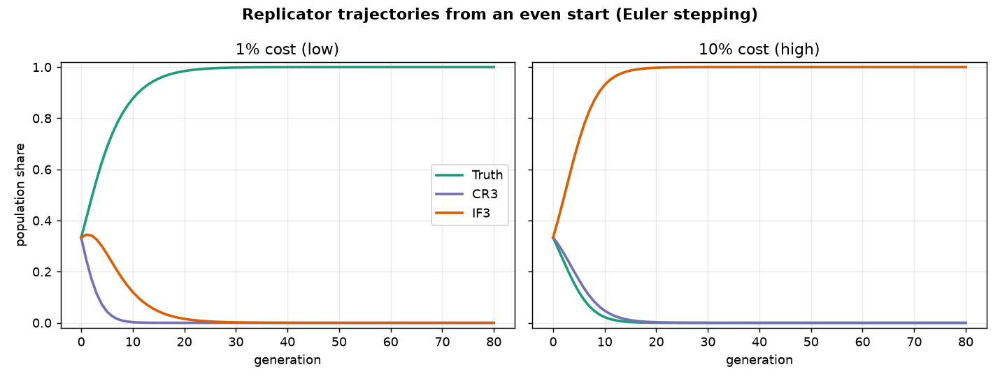

How the model works
A guided tour of the machinery behind the interactive Figure 14 — the world, the three strategies, the cost of perception, and the evolutionary dynamics — with the figures we produced while rebuilding it.
Fitness is not truth
The usual assumption is that clearer perception is fitter perception. But a trait is selected for the payoff of the behavior it guides, not for how accurately it mirrors reality — the two coincide only by accident. Perception can work like a desktop interface: a trash icon shares none of the real properties of the file it points to, yet it guides useful action for a fraction of the cost of understanding the hardware. The paper asks whether evolution keeps the truthful view or the cheap useful one — and builds a game to find out.
The world
An organism faces three territories, each holding a resource whose quantity is a whole number from 1 to 100 (drawn uniformly). What matters is not how much but the utility of that amount, and utility is a bell curve: a mid-range quantity is best, both extremes are poor (think of a dose that can be too little or too much). Agents are paired at random and take turns claiming a territory; who moves first is a coin flip.
U(q) = A · exp( −(q − μ)² / 2σ² )
amplitude A = 100, mean μ = 50, std. dev. σ = 20, quantity q ∈ {1, …, 100}

Three ways to perceive
Each strategy is a rule for turning the true quantity into a perceptual category:
Truth sees the exact quantity — all 100 values distinct — and always picks the best available territory. Maximally accurate, maximally expensive.
CR3 (a critical realist) lumps quantities into just three contiguous bands with two cut-points. Its categories still preserve the true order (a homomorphism): higher category = higher quantity. Honest, but coarse.
IF3 (an interface) also uses three categories, but with four cut-points, so a category can be non-contiguous — the two extremes get folded into one label and the peak is isolated. This breaks the order-preserving link to reality, which is exactly what lets it track utility instead of quantity.


Deriving the payoffs
The paper does not hand us closed-form payoffs for the three-strategy game; it reports payoff matrices obtained by Monte-Carlo simulation (Appendix B). So we rebuilt the game — utility, territories, turn-taking, and each strategy's perception — and computed the 3×3 matrix ourselves, averaging one million random competitions per cell. Our cost-free matrix matches the paper's Table 3 to within a few hundredths, which is the anchor that everything else rests on.
The cost of perception
Perception is charged in bits: to tell apart N categories you need log₂N bits (binary-search style), and a strategy pays for two things — seeing which category a territory is in, and knowing the utility of each category. Truth resolves 100 values, so its "knowing" bill explodes; CR3 and IF3 only rank three categories.
The dynamics
With the cost-adjusted payoff matrix in hand, a population of the three strategies evolves by the replicator equation: a strategy's share grows in proportion to how far its fitness beats the population average, where fitness is frequency-dependent (who you meet depends on the current mix). Every arrow in the interactive is that instantaneous push; a played trajectory is the path you get by following it, which always takes the tell-tale slow–fast–slow S-curve of a takeover.
dxi/dt = xi ( fi − f )
fitness fi = Σj Pij xj · average f = Σi xi fi · x = population shares, P = cost-adjusted payoff matrix
The result
Sweep the cost and the winner flips. Below a critical cost the field drains to Truth; above it, to IF3. In a thin band around ~4.27% of truth's payoff they coexist. And CR3 — partial truth — is driven extinct whenever IF3 is present, at every cost: there is no safe middle ground.


Validation, and honesty
Every published number checks out against our from-scratch model: Table 3 (cost 0), and Tables 4 and 5 (cost 1% and 10%), plus the ~4.27% bifurcation. The authors are careful about scope: the result says selection can drive truth extinct, under assumptions — a static environment, infinite well-mixed populations, fixed lifetime strategies, deterministic perception. Real biology relaxes all of these. The claim is not that we never see truly, but that truth and fitness are logically distinct, and once a genuine interface strategy exists, neither whole truth nor partial truth reliably survives.